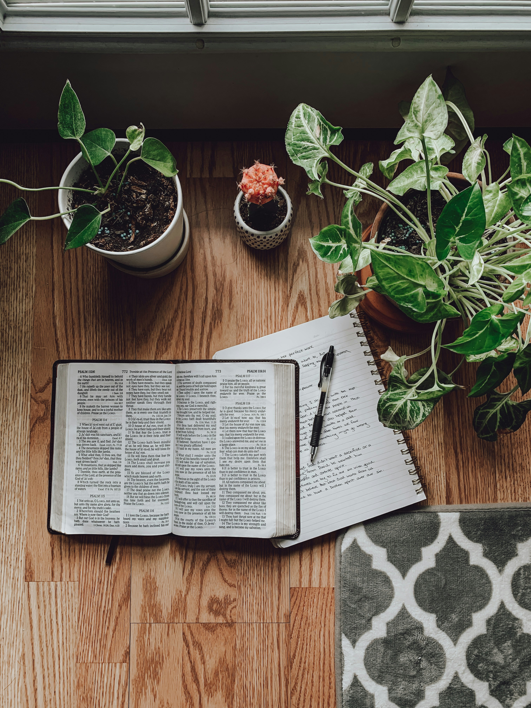

Faith and Trust
When God Feels Silent
How to keep praying when heaven feels quiet, and why silence is not the same as absence.
Spirit-fed articles, devotionals, and Bible studies to nourish your walk with Christ every day.

Some days are loud with pressure. Some days are quiet with questions. This devotion meets the reader in both places and points back to the same promise: Christ is enough, and His strength does not run out.
We do not have to manufacture courage before we come to God. We bring the real day, the real fear, and the real need - and He meets us there with steady grace.
Short, practical, and written for the pace of real life.
How to keep praying when heaven feels quiet, and why silence is not the same as absence.

Holiness is not a stage performance. It is a daily walk shaped by grace, truth, and obedience.

From Genesis to Revelation, God's promises hold steady for every season of uncertainty.

No sin is too great for the grace of God. This word is for the one who feels too far gone.

Why the soul relaxes when control is released, and how surrender becomes the doorway to peace.

Faith at home shapes the next generation long before they step into a sanctuary.